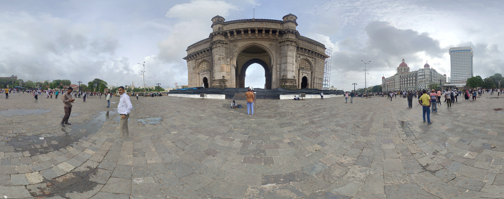
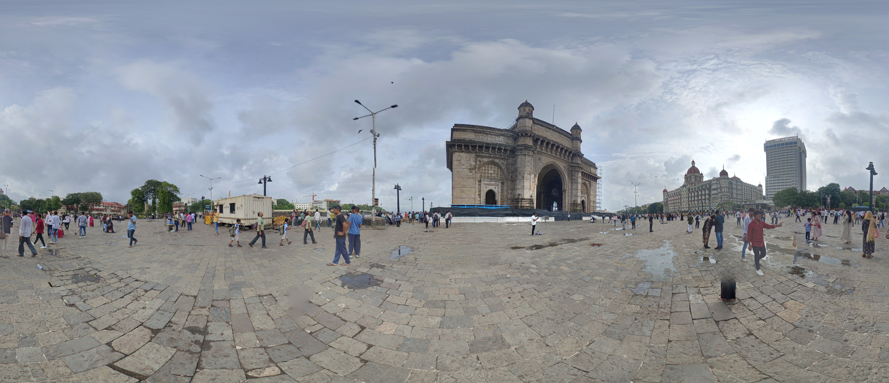
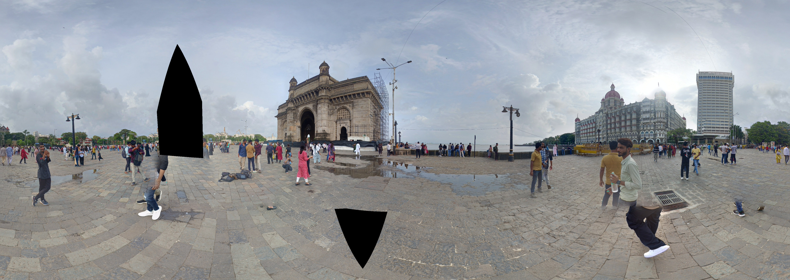
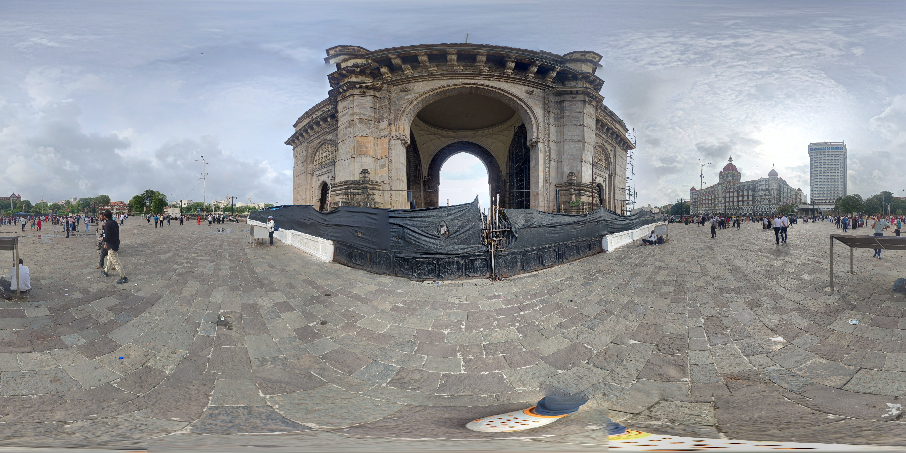
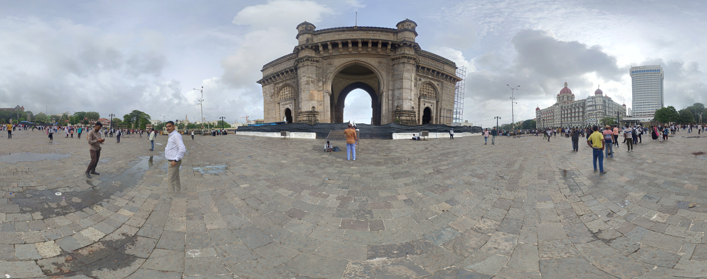
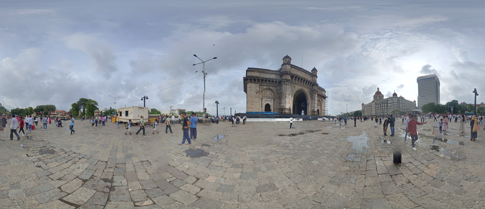
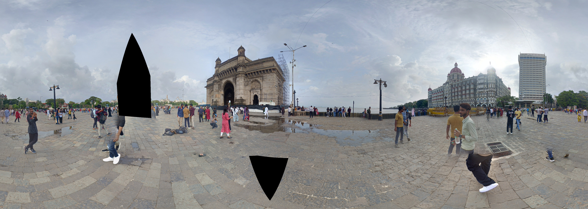
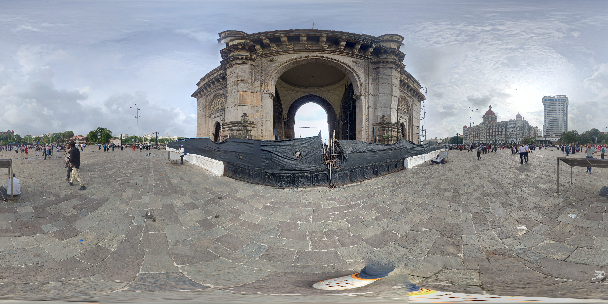

A Symbol of Colonial Legacy The Gateway of India, located in Mumbai, was built during the British Raj and stands as a symbol of colonial legacy in India. Completed in 1924, it was initially constructed to commemorate the visit of King George V and Queen Mary to India in 1911. The imposing structure is a blend of Hindu and Muslim architectural styles, reflecting the diverse cultural influences that have shaped India's history.
 






